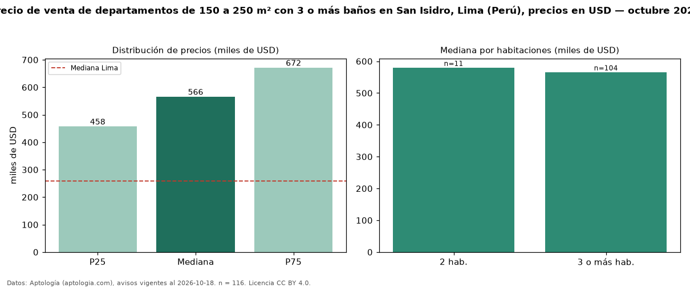

Precio de venta de departamentos de 150 a 250 m² con 3 o más baños en San Isidro, Lima (Perú), precios en USD — octubre 2026
Con 116 avisos vigentes, el precio mediano de departamentos de 150 a 250 m² con 3 o más baños en venta en San Isidro, Lima (Perú) es USD 566.000. Frente a la mediana de los departamentos de 150 a 250 m² en venta de San Isidro (USD 540.000, n = 211), queda 5 % por encima; este segmento reúne el 55 % de esos avisos. Por metro cuadrado, la mediana es USD 2.807/m² (n = 113), 0 % por encima de los departamentos de 150 a 250 m² en venta de San Isidro (USD 2.798/m²). El área mediana anunciada es 199 m². El segmento con más oferta es el de 3 o más habitaciones (104 avisos, mediana USD 566.000); pasar de 2 habitaciones a 3 o más habitaciones cambia la mediana −2 %. La mediana de todos los departamentos en venta de Lima es USD 258.023 (+119 % de diferencia). La mitad central de los avisos va de USD 457.750 a USD 671.625 (razón 1,5), una dispersión moderada. Datos: Aptología (aptologia.com), CC BY 4.0 — https://www.aptologia.com/pe/venta/lima/san-isidro. Archivos: PDF, CSV con las cifras y gráfica PNG.

| Avisos únicos | 116 |
|---|---|
| Percentil 25 | COP 457.750 |
| Mediana | COP 566.000 |
| Percentil 75 | COP 671.625 |
| Mediana por m² | COP 2.807 |
Fuente: avisos vigentes de portales inmobiliarios recopilados por Aptología, deduplicados (mínimo 30 avisos únicos por celda). Precios pedidos, no cerrados. Fecha: 2026-10-18.